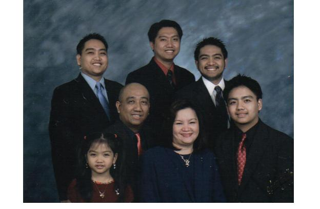
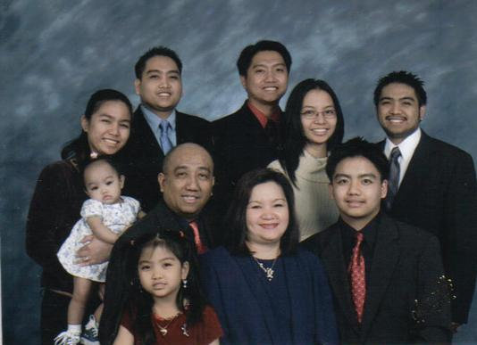
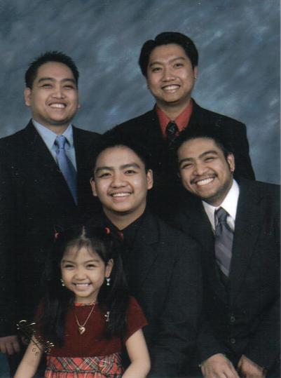

Larry & Tutz,
Jim Roxas ata yung kabatch nyo at naging varsity player ng FEU. Gusto mo bang awitan kita ng isang awit na pinamagatang Thetans March Hymn? Kumusta na mga utol? Ang ka-batch ko noon ay si ephie castro, batch 76. Ang probinsiyanong ito na kaputol ng inyong mga pusod ay binabaybay ang daan patungong FOXWOODS RESORT CASINO, THE BIGGEST CASINO IN THE WORLD upang maghanapbuhay. Kilala nyo ang aking maybahay na dati kong kasintahan. Si ditas ay binigyan ako ng 5 supling ns sila Ardie 24, Michael Arthur 23, Jan Vincent 19, Aaron Joseph 15 and my little princess Sharmagne Joyce 6. Pasensiya na kayo mga brod at baog itong utol nyo. Gusto nyo ba dagdagan ko pa? Well, anyway I hope nag-enjoy kayo sa aking mga napagaralan kay mrs. agarap. May apo na pala ako named Micaela from my 2nd son. She was born July 4, 2005.Regards to your families brods! Hope to hear from you soon. Stay healthy.
ART M


